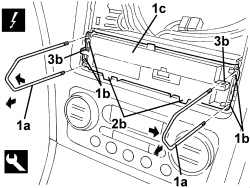

5570T49 BLUETOOTH ELECTRONIC CONTROL UNIT - R.R.
- Path
- Procedures > 55 ELECTRICAL EQUIPMENT > 5570 ACCESSORIES > 5570T CAR RADIO/CAR TELEPHONE/VIDEO > 5570T49 BLUETOOTH ELECTRONIC CONTROL UNIT - R.R.
- Kind
- repair procedure (removal / refitting; the operation number is the code)
- Applies to
- all engines; all production periods
- Interactive page
- https://sloeber94.github.io/elrnDB-aBrrSpdr/en/#/946002447
Applies to: all engines; all production periods
 Removing
Removing
 Refitting
Refitting- Make sure that the battery is disconnected.
Op. 5570T80 CAR RADIO EQUIPMENT - R+R
1. Insert the tools (1a) fully in the housings (1b) in the control unit (1c).
Tool | Description | Function | Validity |
|---|---|---|---|
46515517 | Extractor | Radio extraction |
2. Grip the tools (1a) and pushing them outwards and pulling them towards yourself, release the inner retainers for the control unit (1c), taking care not to damage the retainers (2b).
3. Carefully release the retainers (2b) and extract the control unit (1c); if necessary, extract the control unit attaching it to the openings (3b).
- Disconnect the electrical connection.
Description | Component |
|---|---|
BLUETOOTH CONTROL UNIT |

Applies to: all engines; all production periods
Refitting
Removing- Check that the control unit is not damaged.
- Check the electrical connection.
- Place the control unit in position and attach the inner and outer retainers.
Op. 5570T80 CAR RADIO EQUIPMENT - R+R
- Once a new control unit is installed it is necessary to:
update the software;
check and, if necessary, set the voice message language correctly;
carry out the pairing operation for the telephones to be connected.
See descriptions 5570 ACCESSORIES
- Test the operation of the systems involved.
Topics linked from this page (3)
Topics that link to this page (17)
- 5570 BLUE&ME SYSTEM
- 5580M BLUE&ME NAV
- N049 THE BLUETOOTH CANNOT BE ENABLED
- N062 THE TELEPHONE MICROPHONE DOES NOT WORK
- N069 THE BLUETOOTH CONTROLS ON THE STEERING WHEEL DO NOT WORK
- 5570TO CHECK OPERATION OF VOICE RECOGNITION
- 5070TP BLUETOOTH SOFTWARE LANGUAGE UPDATE PROCEDURE
- 5570TO CHECK OPERATION OF VOICE RECOGNITION
- 5070TP BLUETOOTH SOFTWARE LANGUAGE UPDATE PROCEDURE
- E1050 CAN CONNECTION LINES - WIRING DIAGRAM
- E1050 CAN CONNECTION LINES - COMPONENT LOCATION
- E1050 CAN CONNECTION LINES - WIRING DIAGRAM
- E1050 CAN CONNECTION LINES - COMPONENT LOCATION
- E3570 INTEGRATED RADIOPHONE - WIRING DIAGRAM
- E3570 INTEGRATED RADIO PHONE - COMPONENT LOCATION
- E4090 NAVIGATOR WIRING DIAGRAM
- E4090 NAVIGATOR COMPONENT LOCATION